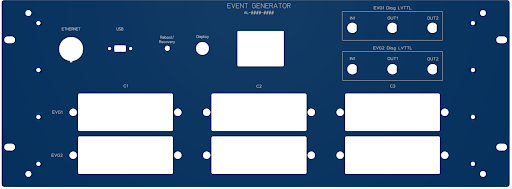
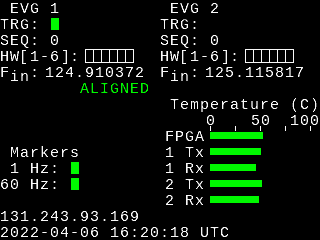
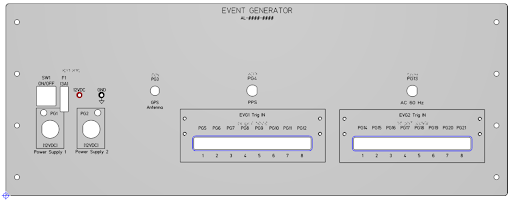
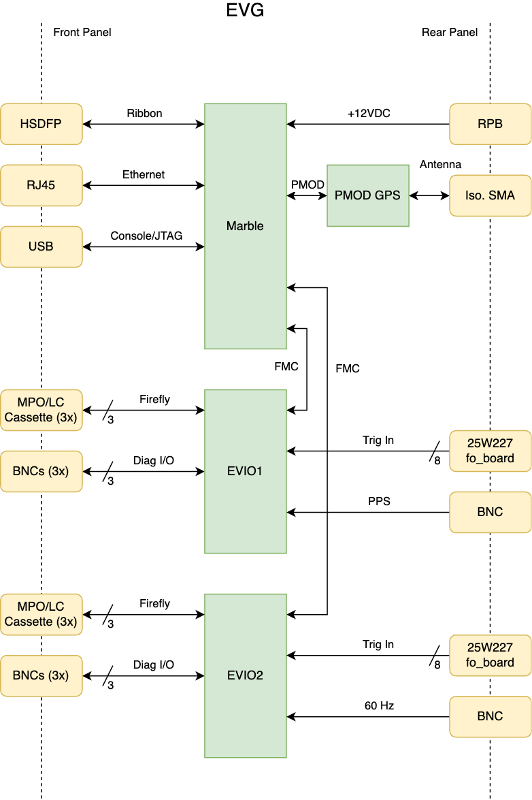
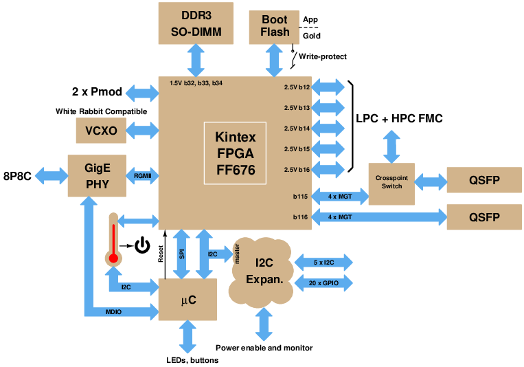
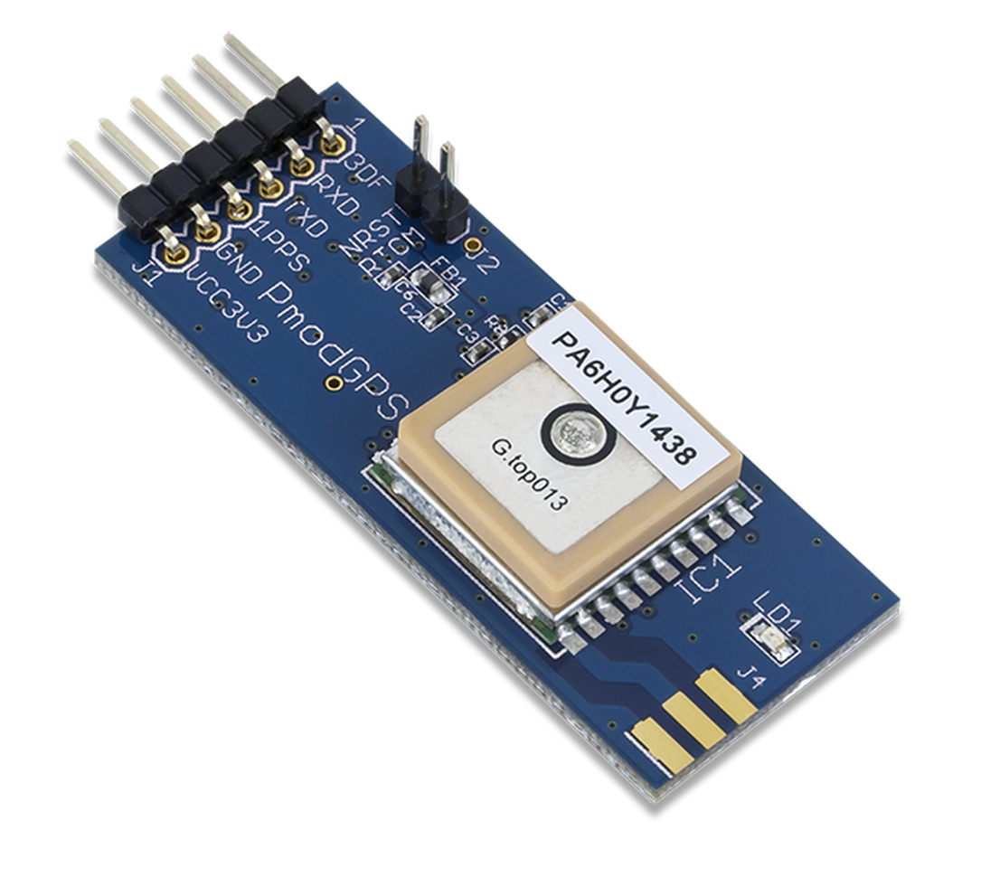

Hardware
The dual event generator consists of an FPGA platform, two FMC
cards, a front panel display, and an optional PMOD card. Each event generator distributes RF reference and
timing signals on an optical fiber using a protocol compatible with that
used by Micro-Research Finland timing equipment. The ALS-U
project requires two event generators, one for each of the RF
frequencies in use. The generators are locked to a common base and
ensure coincidence between the two frequency domains. The FPGA can also act as a stratum 1 NTP server.
Front Panel

Front Panel Connectors
There are several connectors on the event generator front panel.
- RJ-45 1000Base-T Ethernet.
- USB console serial port and JTAG interface.
- BNC connectors carrying diagnostic signals.
- Up to three fiber I/O cartridges per event domain, each with 12 dual-LC50 fiber connectors.
“Display” Button
This button has multiple uses.
- To extend its lifetime the display backlight is turned off
after twenty minutes. Pressing and releasing this button
enables the display for another twenty minutes.
- If the display is showing a warning message pressing and holding
this button for one second will clear the warning message and restore
the display to its current page.
- Each momentary press cycles to the next display page.
- Holding
this button down then pressing and holding the “Reboot/Recovery” button
for more than one second, as described below, will cause the
DEVG_B.bin file to be used in place of the default DEVG_A.bin file.
“Reboot/Recovery” Button
Pressing and holding this button for more than one second causes the FPGA to
perform a power-on reset. If this switch is held down while the
FPGA is starting up after a power cycle or reset the FPGA will enter
“recovery” mode where the
Ethernet MAC address and IPv4 address are set to default values
(AA:4C:42:4E:4C:04 and 192.168.1.129/24, respectively).
Front Panel Display
On startup the front panel display contains information as shown in the image below.

- The top few lines of the display show the status of the event
sequence pattern generators. The green indicator to the right of
the 'TRG:' text blinks when an event sequence is triggered. The
value to the right of the 'SEQ:' text shows the number (0/1)
of the currently or previously active sequence. The 'HW:' line
shows the status of the hardware trigger inputs with trigger input 1 at
the left side of the row of indicators and trigger input 6 at the
right. A green block indicates the presence of light at the
trigger input.
- The fifth line of the display shows the frequencies, in MHz, of the input reference clocks.
- The sixth line of the display shows the word 'ALIGNED' to indicate
that both event generators are emitting heartbeat events aligned to the
point at which the RF references are in coincidence and shows the word
'MISALIGNED' if RF coincidence can not be measured or the coincidence
point has shifted.
- The 'Markers' region at the lower left side of the display shows the status of the timing marker inputs.
- The 'Temperature' region shows a bar indicator of the
temperature of the FPGA and the warmest receiver and transmitter module on each of the FMC cards.
- The penultimate line of the display shows the IPv4 network address of the event generator. The
network address is normally shown as white text on a black background.
A network address shown as black text on a white background indicates
that the unit is in “recovery” mode.
- The bottom line of the display shows the date and time (UTC).
Pressing and releasing the “Display” button will cycle to the next page in the sequence. The page contents are:
- The startup display showing information as described above.
- The event codes being emitted by event generator 1. Event
codes appear on the screen as they are emitted and remain on the screen
for about seven tenths of a second.
- The event codes being emitted by event generator 2.
Special displays
- Black text on a red background – event generator is reporting a fatal
error condition. The only exit from this state is a reset or power cycle.
- Black text on a yellow background – event generator is reporting a warning
condition. Pressing and holding the “Display” button for one second will exit this state.
Rear Panel

There following components are present on the event generator rear panel.
- Connectors for 12V power adapters.
- Holder for 3A slow-blow fuse.
- On/Off switch.
- Power supply test points
- Isolated SMA connector for antenna to the optional GPS receiver.
- Broadcomm "Versatile Link" fiber receivers for hardware event
triggers. Only the first six connectors of each group of eight
are used. Event triggers are generated upon loss of light.
- Isolated BNC inputs for timing reference signals. Inputs
are LVTTL compatible, medium impedance (475Ω plus series LED).
Logic 1 threshold is about 1.8V and maximum input voltage is 5.0V.
Hardware
As shown in the following figure the dual event generator is based on
a Marble FPGA carrier board and two EVIO FMC cards. An optional
GPS receiver PMOD card can be used to provide the time reference.
The system is enclosed in a 4U rack-mount chassis.

FPGA Card
The FPGA carrier card is a 'Marble' developed by the LBNL
Accelerator Technology Group. The following block diagram
shows the salient features of this board.

- Open Hardware (OHWR) dual-LPC-FMC carrier based on a Kintex-7 (XC7K160TFFG676-2)
- Power entry through barrel-style connector (CUI
PJ-102AH) or Ethernet (PoE).
- 1000BaseT Ethernet on 8P8C "RJ45" connector.
- Eight FPGA GTX transceivers, up to 12.5 Gb/s, connected to QSFP
slots and FMC connectors.
- Two FMC connectors. LPC superset, with multiple high speed serial lanes.
- SO-DIMM SDRAM connector, unused in this application.
- Two dual-row (12 pin) 3.3V PMOD connectors. One of these
drives the display and the other is used to connect the optional GPS receiver.
- 16 MB SPI flash memory for FPGA and application bootstrap.
FMC Cards
Each FMC card provides a reference clock to the FPGA gigabit
transceiver block and to an FPGA clock input, six hardware trigger inputs driven by fiber to copper converts on another
board, and one optically coupled,
TTL level auxiliary input.
Each card also provides one non-isolated, TTL level, diagnostic
input and two non-isolated, LVTTL level, diagnostic
outputs capable of driving 50Ω loads. The auxiliary input of the first card is
used to provide a pulse-per-second signal to the FPGA and the
auxiliary input of the second card is used to provide a power line
monitor signal to the FPGA. Up to three 12-channel
Firefly transceivers can be installed to provide event stream
outputs. The first channel of the first transceiver is
used to carry the reference clock signal to the card. A 40×40
crosspoint switch allows for flexible routing of event streams and
reference clocks between the Firefly modules and the FMC connector.
In addition to their use in the dual event generator the FMC cards are also used in the event fanout modules.
GPS Receiver
A Digilent GPS receiver module can be connected to the Marble PMOD1
(J12) connector to provide the absolute time of day and the
pulse-per-second marker required for event generator operation. An
SMA connector must be soldered to the module and connected through the
rear panel isolated SMA connector to an external antenna.

Front Panel Display
The Marble PMOD2 (J13) connector connects to the front panel Display
and Reset/Recovery push buttons and drives a 240×320
display equipped with a Sitronix ST7789V controller configured for
4-line serial operation. The connector pin assignments are
shown in the following table.
PMOD2
Line
|
ST7789V
Line
|
Description
|
0
|
|
Active-low chip select signal.
|
1
|
SDA
|
Bidirectional data transfer.
|
2
|
–
|
Enable display backlight
driver
|
3
|
SCLK
|
|
4
|
|
Active-low reset signal.
|
5
|
|
Command(Low) or Data(High) transfer.
|
6
|
–
|
Reset/Recovery button
(active-low, on-board pull-up)
|
7
|
–
|
Display button (active-low, on-board
pull-up) |
USB FTDI Serial Ports
The four ports of the USB/Serial adapter are assigned as follows:
A – JTAG
B – RTS/DTR drive the LPC_ISPn and ISP_RSTn lines,
respectively. Thus the DTR line resets the microcontroller when low ("DTR Active").
C – FPGA console serial port.
D – Microcontroller console serial port.
The console serial ports are set to 115200-8N1. Use a terminal
emulator of your choice to communicate with the FPGA or microcontroller.